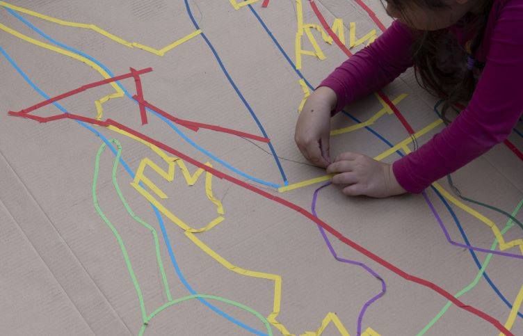

Verona Interfaces - Standards für computerbasiertes Testen

You find a short introduction in English language at the end of this page.
Willkommen
In Deutschland werden viele Erhebungen des Bildungsmonitorings dezentral durchgeführt, d. h. jedes Bundesland folgt eigenen Traditionen und Prioritäten. Auch zentral auf Ebene der KMK abgestimmte Lernstandserhebungen (VERA) benutzen zwar gleiche Aufgaben und methodische Verfahren, technisch und organisatorisch laufen aber auch diese Erhebungen getrennt in den Ländern. Eine zentrale technische Lösung würde in Deutschland den heterogenen Anforderungen nicht gerecht werden können.
Daraus resultieren sehr hohe Anforderungen an die Modularität und Interoperabilität von technischen Lösungen im computerbasierten Testen. Sämtliche Programmierungen müssen über wohldokumentierte Schnittstellen verfügen. Die Initiative “Verona” hat das Ziel, diese Schnittstellendefinitionen zu erarbeiten und zu pflegen. An dieser Stelle finden Sie Verweise auf die Spezifikationen, aber vor allem ausführliche Erläuterungen für deren Nutzung (im Aufbau).
Spezifikationen - Übersicht
Folgende Spezifikationen liegen vor und werden in englischer Sprache gesondert in Repositorien geführt:
| Modul | Beschreibung | Direkte Links |
|---|---|---|
| Player | Komponente, die eine Aufgabe in einer Testanwendung abspielt | Spezifikation (Html), Modell (UML) |
| Editor | Komponente, mit der man Aufgaben gestaltet | Spezifikation (Html) |
| Schemer | Komponente, mit der man die Kodieranweisungen für die Antwortverarbeitung festlegt | Spezifikation (Html) |
| Metadaten | Alle o. g. Komponenten enthalten Metadaten auf einheitliche Art, die hier beschrieben ist. | Schema Editor |
Redaktion
Die vorliegenden Texte werden unter Federführung des Instituts zur Qualitätsentwicklung im Bildungswesen veröffentlicht. Autor*innen sind ggf. entweder im Kopf eines Dokumentes genannt oder zu Beginn eines größeren Seitenzweiges.
Lizenz
Alle Texte sind unter der Lizenz CC0 veröffentlicht. Die Leitlinien zur Sicherung guter wissenschaftlicher Praxis (s. z. B. DFG-pdf) gebieten gleichwohl, dass die Quellen von Informationen genannt werden sollten.
Haftungsausschluss
Auf diesen Webseiten sind Links auf externe Webseiten in besonderer Weise gekennzeichnet (s. oben der Link zum IQB). Wir prüfen diese Quellen regelmäßig, können aber für diese Seiten und die dort hinterlegten Zusatzmaterialien keine Haftung für Richtigkeit, Vollständigkeit und Aktualität übernehmen. Dafür sind ausschließlich deren Betreiber verantwortlich.
Technische Realisierung
Dieser Webauftritt basiert auf Texten in einer einfachen Syntax Markdown, die anschließend in Html und CSS umgesetzt werden. Hierzu wird Quarto verwendet. Sämtliche Dateien für den Inhalt und die Steuerung sind in einem öffentlich zugänglichen Codeverwaltungssystem gespeichert. Eine Anleitung für Änderungen an den Inhalten finden Sie z. B. hier.
Kontakt
Wenn Sie Inhalte beitragen oder Probleme melden möchten, können Sie die Funktion “Problem melden” nutzen, die rechts auf jeder Seite zu finden ist. Sie werden dann zu GitHub weitergeleitet. Es ist ein Account bei GitHub erforderlich.
Ansonsten kontakten Sie bitte die IT des IQB.
English: Verona Interface Specifications
The repositories located at /verona-interfaces consist of API specifications for assessment applications. In Germany, every state / Bundesland conducts assessments in schools and uses different technical solutions. In order to exchange assessment units or to share code modules, the data formats and interfaces need to be specified. The initiative ‘Verona’ works on these specifications.
This is an early stage of this endeavour, we did some first steps. To support this process, we publish this documentation in German language. Here you find a general introduction and clarifying of terms etc.
Besides, the specifications come in separate repositories in English language: Player, Editor, Schemer and Metadata.